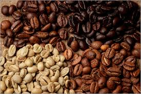

Origem
O Café, uma bebida consumida em vários países, teve sua origem na África, nas terras altas da Etiópia (Cafa e Enária).O nome "café", pode ter sua origem na região de Cafa, sendo atualmente uma das bebidas mais consumidas no mundo.Há diversos tipos de grãos de café (arábica, robusto, etc.) e algumas derivações, como o expresso, cappuccino, mocha, café gelado, café com leite, dentre outros.
Uma lenda conta que um pastor etíope percebeu que suas ovelhas mudavam o comportamento após comer as folhas do cafeeiro.Embora tenha sua origem na África, sua difusão teve como ponto de partida a Arábia, onde foi cultivado e usado para cura de diversos males.
Seu uso
Os grãos de café são usados, principalmente, para produzir uma bebida por meio da infusão deles.O efeito do café mais conhecido é, sem dúvida, o estimulante, conseguido graças à presença de cafeína, uma substância que melhora o estado de alerta, capacidade de concentração, energia e desempenho em atividades simples.
Se consumida em pequena quantidade, a cafeína não provoca riscos à saúde, porém o consumo em doses elevadas pode gerar sintomas como dores de cabeça, insônia, ansiedade, taquicardia e palpitação. Algumas pessoas, no entanto, são sensíveis à cafeína, portanto, mesmo doses pequenas podem gerar sintomas desagradáveis.

Benefícios
- Ele melhora seu fígado e o deixa mais saudável.
- Beber café deixa você mais inteligente.
- Estimula o metabolismo.
- Possui nutrientes importantes.
- Café reduz o risco de diabetes tipo 2.
- Reduz o risco de Parkinson.
- Beber café combate a depressão e também deixa você mais feliz.
- Reduz o risco de vários tipos de câncer.